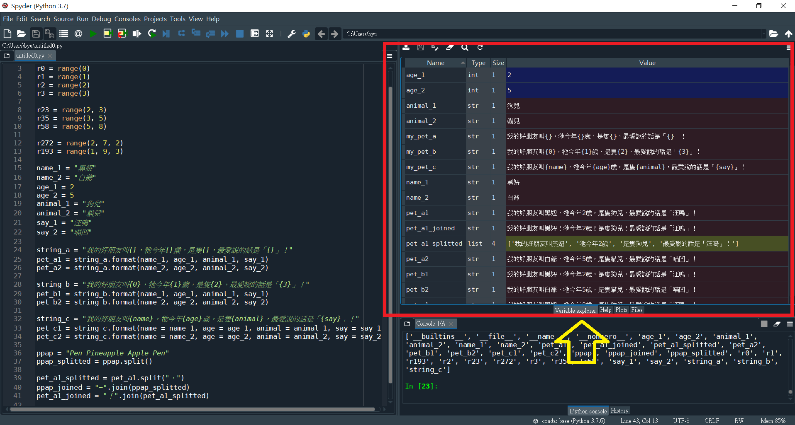

6 序列型別（Sequence Types）
前面提到「字串（string）、元組（tuple）、串列（list）」等都是有序的，也就是說其中元素的排列有其順序，這些有內在順序的型別，稱為序列型別（sequence types）。
這裡再新學一個range( )函式，它會回報一個「範圍物件」，該物件同樣也是一種序列。
還有，因為字串是很基本的型別，它的列出格式其實可以有很多變化，還有其他與串列相關的方法，如：拆分（split）、結合（join），本章我們就這方面來看一些應用。
至此我們已經學了不少型別，每種型別都有與其他型別相同或不相同的方法，要怎樣能夠很快地知道某個型別的物件有哪些方法可用呢？如果在使用時用了很多不同的變項名稱來指涉物件，快弄不清楚有哪些變項，每個變項名稱代表什麼型別的物件？怎麼辦呢？請接著看本章後面解決方法。
接著我們對序列型別的共用方法再回顧複習一下。
6.1 範圍（range）
6.1.1 範圍建構
在「基本彙集型別」那一章，我們學過了「範圍索引」，範圍物件也是同樣概念，它是一連串的整數，預設也是以零作為起點，直到最接近終點但不是終點的那個整數。我們一樣用例子來學習：
# 只輸入一個值，代表終點的值，如果輸入0為終點，起點預設也是0，因為沒有「從0開始到小於0的最大整數」，長度為0。
r0 = range(0)
r1 = range(1)
r2 = range(2)
r3 = range(3)
print(type(r0), len(r0), r0, *r0) # 列出型別、長度、物件、展開物件。## <class 'range'> 0 range(0, 0)## <class 'range'> 1 range(0, 1) 0## <class 'range'> 2 range(0, 2) 0 1## <class 'range'> 2 range(0, 2) 0 1如果輸入二個值，第一個是起點，第二個是終點，實際範圍會小於終點，如下：
## <class 'range'> 1 range(2, 3) 2## <class 'range'> 2 range(3, 5) 3 4## <class 'range'> 3 range(5, 8) 5 6 7如果輸入三個值，第三個是間隔，如下：
## <class 'range'> 3 range(2, 7, 2) 2 4 6## <class 'range'> 3 range(1, 9, 3) 1 4 76.1.2 範圍用途
範圍（range）在後面談到迴圈（loop）時很好用，我們留待那時再談。
6.2 字串（string, sequence）
6.2.1 字串格式
這裡我們來學字串的格式format( )方法，請看以下例子：
name_1 = "黑妞"
name_2 = "白爺"
age_1 = 2
age_2 = 5
animal_1 = "狗兒"
animal_2 = "貓兒"
say_1 = "汪嗚"
say_2 = "喵凹"
string_a = "我的好朋友叫{}，牠今年{}歲，是隻{}，最愛說的話是「{}」！"
pet_a1 = string_a.format(name_1, age_1, animal_1, say_1)
pet_a2 = string_a.format(name_2, age_2, animal_2, say_2)
print(pet_a1, "\n", pet_a2)## 我的好朋友叫黑妞，牠今年2歲，是隻狗兒，最愛說的話是「汪嗚」！
## 我的好朋友叫白爺，牠今年5歲，是隻貓兒，最愛說的話是「喵凹」！string_b = "我的好朋友叫{0}，牠今年{1}歲，是隻{2}，最愛說的話是「{3}」！"
pet_b1 = string_b.format(name_1, age_1, animal_1, say_1)
pet_b2 = string_b.format(name_2, age_2, animal_2, say_2)
print(pet_b1, "\n", pet_b2)## 我的好朋友叫黑妞，牠今年2歲，是隻狗兒，最愛說的話是「汪嗚」！
## 我的好朋友叫白爺，牠今年5歲，是隻貓兒，最愛說的話是「喵凹」！string_c = "我的好朋友叫{name}，牠今年{age}歲，是隻{animal}，最愛說的話是「{say}」！"
pet_c1 = string_c.format(name = name_1, age = age_1, animal = animal_1, say = say_1)
pet_c2 = string_c.format(name = name_2, age = age_2, animal = animal_2, say = say_2)
print(pet_c1, "\n", pet_c2)## 我的好朋友叫黑妞，牠今年2歲，是隻狗兒，最愛說的話是「汪嗚」！
## 我的好朋友叫白爺，牠今年5歲，是隻貓兒，最愛說的話是「喵凹」！6.2.2 字串輸入
我們可以用input( )函式來取得讓使用者輸入的字串，該函式所用的引數（餵給該函式的東西），一般是提示使用者輸入的話語，舉例如下：
## Error in py_call_impl(callable, dots$args, dots$keywords): EOFError: EOF when reading a line
##
## Detailed traceback:
## File "<string>", line 1, in <module>## Error in py_call_impl(callable, dots$args, dots$keywords): EOFError: EOF when reading a line
##
## Detailed traceback:
## File "<string>", line 1, in <module>## Error in py_call_impl(callable, dots$args, dots$keywords): EOFError: EOF when reading a line
##
## Detailed traceback:
## File "<string>", line 1, in <module>## Error in py_call_impl(callable, dots$args, dots$keywords): EOFError: EOF when reading a line
##
## Detailed traceback:
## File "<string>", line 1, in <module>## Error in py_call_impl(callable, dots$args, dots$keywords): NameError: name 'name' is not defined
##
## Detailed traceback:
## File "<string>", line 1, in <module>6.2.3 字串的分拆和結合
前面學過的字串方法不包括字串的拆分和結合，我們先學拆分，split( )方法的作用是將整個字串在每個空白或指定字符處切開成串列中的各個元素。
## Pen Pineapple Apple Pen
## ['Pen', 'Pineapple', 'Apple', 'Pen']## ['我的好朋友叫黑妞', '牠今年2歲', '是隻狗兒', '最愛說的話是「汪嗚」！']結合的話則用join( )方法，因為它是一個字串方法而不是串列方法，所以是「間隔字串.join(串列)」而不能反過來操作。
## Pen~Pineapple~Apple~Pen## 我的好朋友叫黑妞！牠今年2歲！是隻狗兒！最愛說的話是「汪嗚」！6.3 查找變項型別及其方法
變項越弄越多，要知道哪個變項是什麼型別什麼內容，使用spyder可直接觀察右上區塊的「Variable explorer」，直接在該窗頁查找即可，畫面如下： 
要看環境中有哪些變項，以及各個變項有哪些方法，可使用dir( )函式：
## ['R', '__annotations__', '__builtins__', '__doc__', '__loader__', '__name__', '__package__', '__spec__', 'age_1', 'age_2', 'animal_1', 'animal_2', 'name_1', 'name_2', 'pet_a1', 'pet_a1_joined', 'pet_a1_splitted', 'pet_a2', 'pet_b1', 'pet_b2', 'pet_c1', 'pet_c2', 'ppap', 'ppap_joined', 'ppap_splitted', 'r', 'r0', 'r1', 'r193', 'r2', 'r23', 'r272', 'r3', 'r35', 'r58', 'say_1', 'say_2', 'string_a', 'string_b', 'string_c', 'sys']## ['__add__', '__class__', '__contains__', '__delattr__', '__dir__', '__doc__', '__eq__', '__format__', '__ge__', '__getattribute__', '__getitem__', '__getnewargs__', '__gt__', '__hash__', '__init__', '__init_subclass__', '__iter__', '__le__', '__len__', '__lt__', '__mod__', '__mul__', '__ne__', '__new__', '__reduce__', '__reduce_ex__', '__repr__', '__rmod__', '__rmul__', '__setattr__', '__sizeof__', '__str__', '__subclasshook__', 'capitalize', 'casefold', 'center', 'count', 'encode', 'endswith', 'expandtabs', 'find', 'format', 'format_map', 'index', 'isalnum', 'isalpha', 'isascii', 'isdecimal', 'isdigit', 'isidentifier', 'islower', 'isnumeric', 'isprintable', 'isspace', 'istitle', 'isupper', 'join', 'ljust', 'lower', 'lstrip', 'maketrans', 'partition', 'replace', 'rfind', 'rindex', 'rjust', 'rpartition', 'rsplit', 'rstrip', 'split', 'splitlines', 'startswith', 'strip', 'swapcase', 'title', 'translate', 'upper', 'zfill']## ['__add__', '__class__', '__contains__', '__delattr__', '__delitem__', '__dir__', '__doc__', '__eq__', '__format__', '__ge__', '__getattribute__', '__getitem__', '__gt__', '__hash__', '__iadd__', '__imul__', '__init__', '__init_subclass__', '__iter__', '__le__', '__len__', '__lt__', '__mul__', '__ne__', '__new__', '__reduce__', '__reduce_ex__', '__repr__', '__reversed__', '__rmul__', '__setattr__', '__setitem__', '__sizeof__', '__str__', '__subclasshook__', 'append', 'clear', 'copy', 'count', 'extend', 'index', 'insert', 'pop', 'remove', 'reverse', 'sort']6.4 學習要點（序列型別）
- 明白如何使用
range( )建構範圍物件。 - 明白如何使用字串的
format( )方法來改變格式，並且會用input( )函式來取得使用者的輸入值，能夠運用字串的拆分split( )與結合join( )方法。 - 知道如何在spyder中查看物件型別及其內容，知道如何找到特定物件可用哪些方法。
- 假設序列s和序列t是相同型別，n、i、j、k是整數，x是序列可接受的元素，序列可用方法列示如下：
| 運算 | 作用 | 可變序列能用 |
|---|---|---|
| x<U+00A0>in<U+00A0>s | 如元素x在序列s中回報真，否則回報假。 | 否 |
| x<U+00A0>not<U+00A0>in<U+00A0>s | 如元素x不在序列中回報真，否則回報假。 | 否 |
| s<U+00A0>+<U+00A0>t | 將序列s與序列t串接。 | 否 |
| s<U+00A0><U+00A0>n<U+00A0>或<U+00A0>n<U+00A0><U+00A0>s | 將序列s串接n次。 | 否 |
| s[i] | 取得序列s索引位置為i的元素。 | 否 |
| s[i:j] | 取得序列s索引位置為i至未達j的元素。 | 否 |
| s[i:j:k] | 取得序列s索引位置為i至未達j且間隔k的元素。 | 否 |
| len(s) | 取得序列s的長度。 | 否 |
| min(s) | 取得序列s中最小的元素。 | 否 |
| max(s) | 取得序列s中最大的元素。 | 否 |
| s.index(x[,<U+00A0>i[,<U+00A0>j]]) | 取得序列s中首次出現元素x的索引位置，自i起算至未達j。 | 否 |
| s.count(x) | 取得序列s中元素x的個數。 | 否 |
| s[i]<U+00A0>=<U+00A0>x | 將序列s索引位置為i的元素用x替代。 | 是 |
| s[i:j]<U+00A0>=<U+00A0>t | 將序列s索引位置為i至未達j的序列用元素t來替代。 | 是 |
| del<U+00A0>s[i:j] | 刪除序列s索引位置為i至未達j的元素，等同 s[i:j]<U+00A0>=<U+00A0>[]。 | 是 |
| s[i:j:k]<U+00A0>=<U+00A0>t | 將序列s索引位置為i至未達j且間隔k的序列用元素t來替代。 | 是 |
| del<U+00A0>s[i:j:k] | 刪除序列s索引位置為i至未達j且間隔k的元素。 | 是 |
| s.append(x) | 將元素x附加到序列s的尾端，等同<U+00A0>s[len(s):len(s)]<U+00A0>=<U+00A0>[x]。 | 是 |
| s.clear() | 刪除序列s中的全部元素，等同<U+00A0>del<U+00A0>s[:]。 | 是 |
| s.copy() | 回報序列s淺複製的副本，等同<U+00A0>s[:]。 | 是 |
| s.extend(t)<U+00A0>或<U+00A0>s<U+00A0>+=<U+00A0>t | 將序列t展延至序列s的尾端，基本等同<U+00A0>s[len(s):len(s)]<U+00A0>=<U+00A0>t。 | 是 |
| s<U+00A0>*=<U+00A0>n | 序列s更新為原來的n次重複。 | 是 |
| s.insert(i,<U+00A0>x) | 在序列s的索引位置i處插入x元素，等同<U+00A0>s[i:i]<U+00A0>=<U+00A0>[x]。 | 是 |
| s.pop([i]) | 自序列s中取出索引位置i的元素並將其從該序列移除。 | 是 |
| s.remove(x) | 刪除序列s中首次出現的元素x。 | 是 |
| s.reverse() | 將序列s反向排列。 | 是 |
6.5 自我練習（序列型別）
- 打開Jupyter或Spyder。
- 自己建構一些範圍，列出長度、展開內容，看看與自己的預期是否相同。
- 自己建構一些字串，嘗試不同格式調整，善用輸入功能，改變列出結果。
- 使用可變的串列建構一些例子，應用前面表格中的每種序列方法，至少都試過三次，
- 查找自己建構的物件有哪些方法，還有哪些是沒有學過的，善用幫助
help( )嘗試尋找其使用方式，動作試著使用看看。